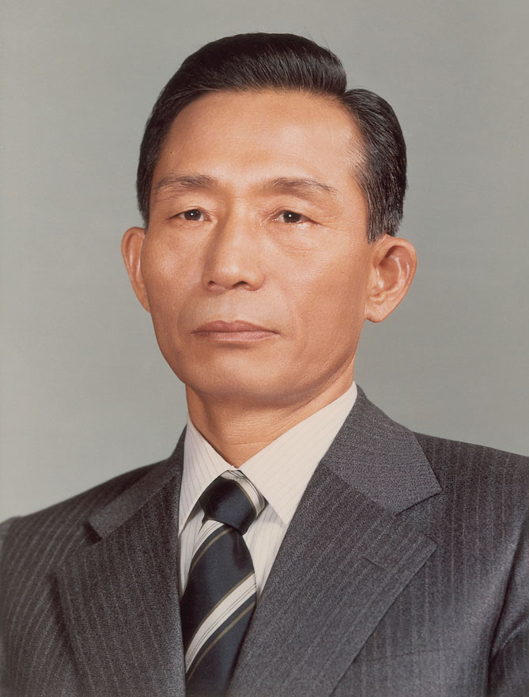
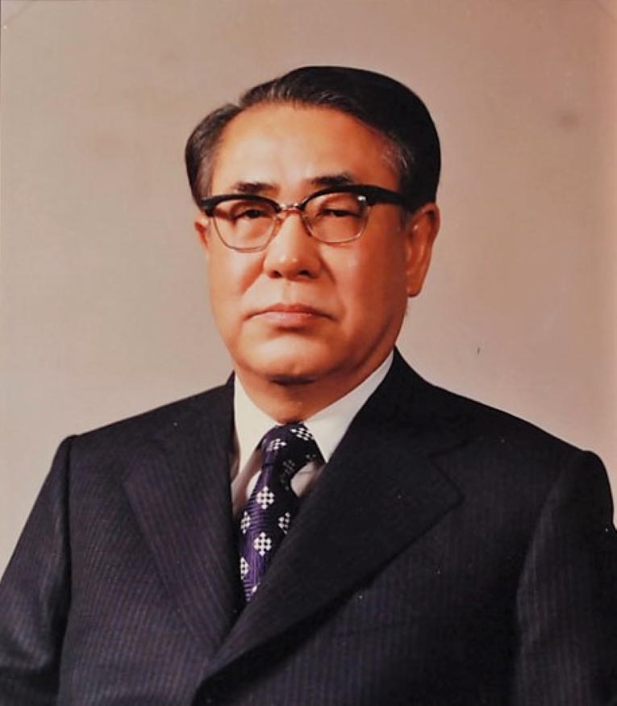
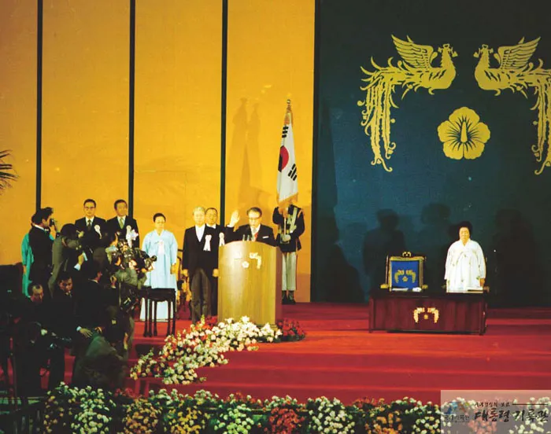
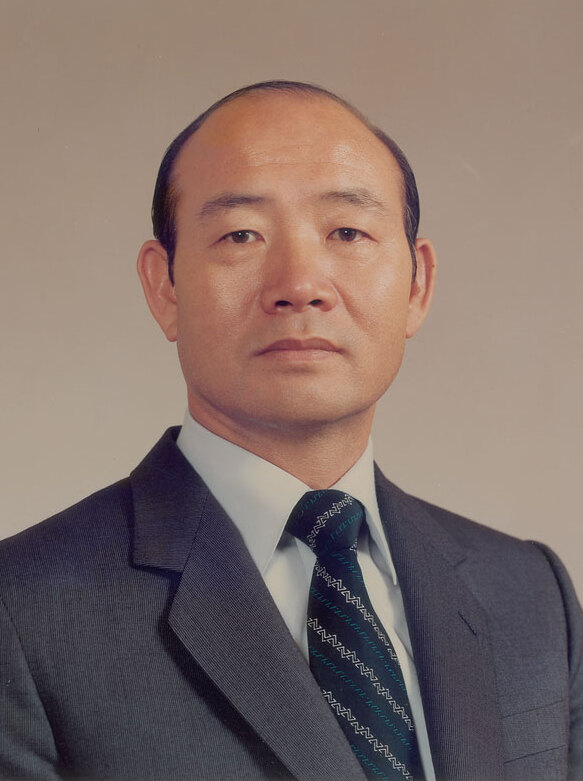
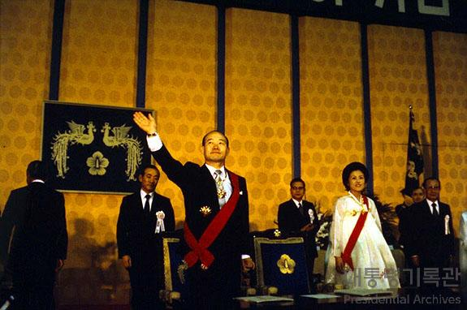

On October 26, `1979, Park Chung-hee,
who had led a dictatorial regime for approximately 18 years and 5 months,
was assassinated.
Consequently, Choi Kyu-hah, the Prime Minister at the time,
was chosen as acting president.
He later was elected as president by National
Conference for Unification on December 6.


The administration of Choi Kyu-hah was pursuing a constitutional amendment to introduce direct presidential elections,
seeking to replace the existing indirect election system—a process that was an election in name only.
Discussions regarding this constitutional amendment were actively underway,
and it appeared likely that the shift to a direct election system would be achieved within a year.
12.12& 5.17 Coup d'etat


However, just six days later, Chun Doo-hwan's coup d'état took place,
bringing discussions on constitutional amendment to a halt.
Following the December 12 military coup, the "new military group"
centered around Chun Doo-hwan gained complete control over the military.
Consequently, Choi Kyu-hah lost his authority as commander-in-chief of the armed forces.
Chun Doo-hwan effectively rose to the position of leader by instigating the insurrection of May 17,
which included expanding martial law nationwide.
Following the May 17 insurrection, Choi Kyu-hah was stripped of even the limited authority his cabinet had possessed.
By the time of the 11th presidential election, he had effectively been reduced to a mere figurehead.